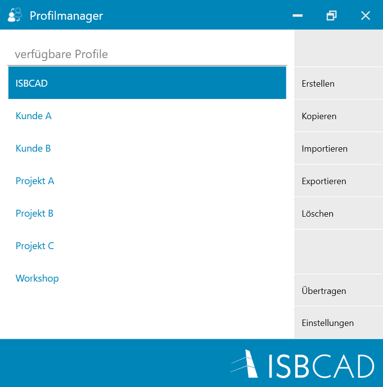
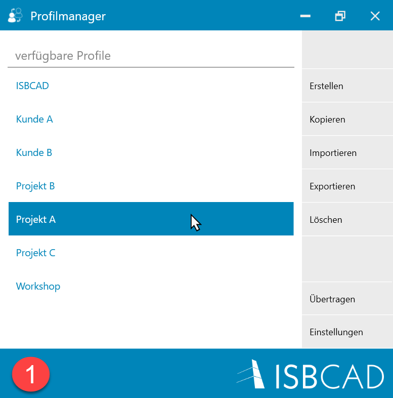
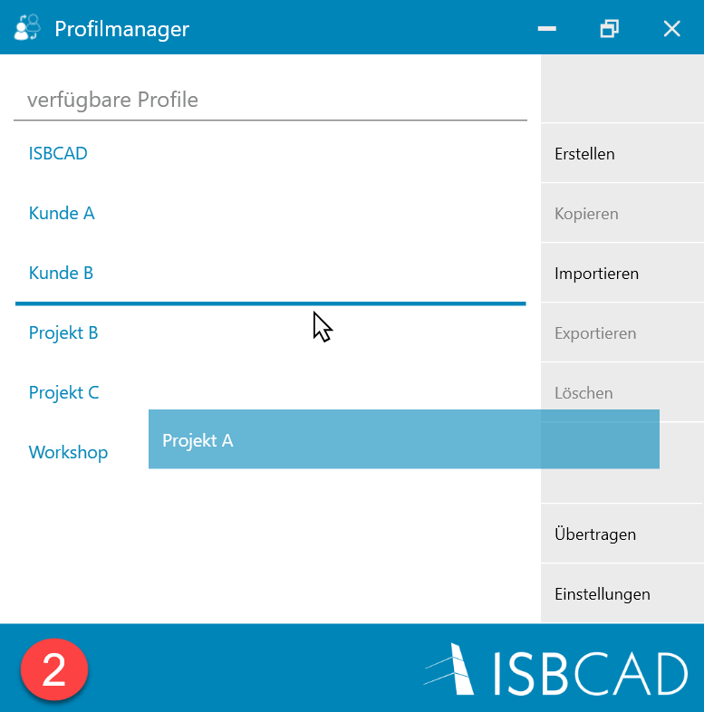
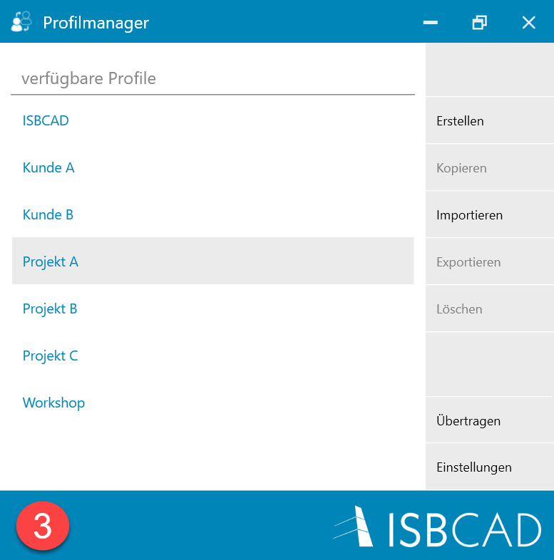
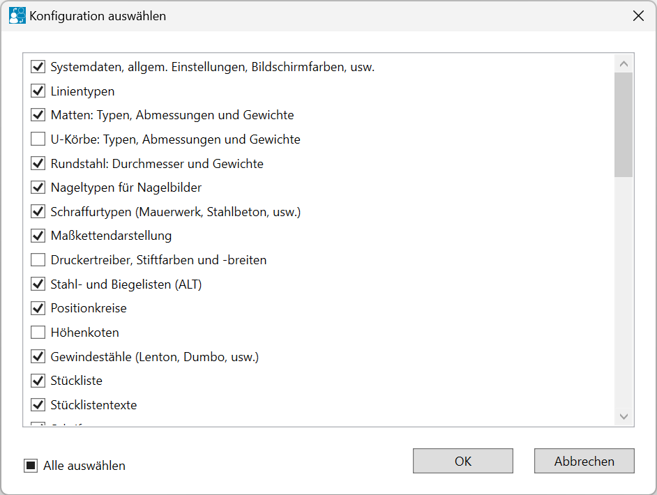
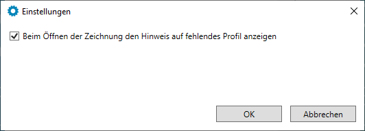
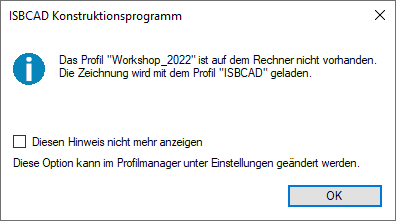
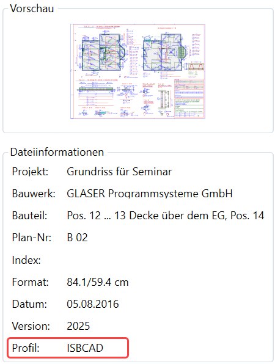

.png)
Windows-Startmenü → Programmgruppe ISBCAD 2026 → Hauptmenü → Profilmanager.
Der Profilmanager ermöglicht es Ihnen, Benutzerprofile auf Ihrem Computer zu erstellen und zu verwalten. Ein Profil ist ein Datensatz, der benutzerdefinierte Programmeinstellungen enthält und die Arbeitsumgebung von ISBCAD definiert. Dazu gehören unter anderem individuelle Farb- und Bewehrungseinstellungen, eigene Schraffurdefinitionen sowie Konfigurationen für die Druckausgabe.
Sie können zwischen Profilen wechseln und Ihre Profile zur Nutzung auf anderen Computern importieren und exportieren. Beim Erstellen eines neuen Profils können Sie wahlweise die Standardkonfiguration (Basisprofil) oder ein bestehendes Profil als Grundlage verwenden. Sie können zusätzlich ausgewählte Einstellungen von einem Profil auf ein anderes oder auf mehrere Profile übertragen.
Alle Änderungen, die Sie in ISBCAD vornehmen, werden im aktiven Profil gespeichert.
Aktives Profil
·Wird für neue Zeichnungen, Datei-Importe sowie bei der Datenübergabe mit dem IFC Section Tool verwendet.
·Kann im Hauptmenü oder mit der Funktion Profil wechseln aktiviert werden.
·Der Profilname wird mit der Zeichnung gespeichert.
·Gilt auch beim Öffnen von Zeichnungen mit unbekanntem Profil (s. Zeichnung einlesen).
·Das aktive Profil wird in der Statusleiste angezeigt.
Basisprofil
·Wenn kein Profil erstellt oder importiert und aktiviert wurde, wird das Basisprofil (Standardkonfiguration) verwendet und bearbeitet.
·Wenn Sie von einer Version vor ISBCAD 2023 auf eine neuere Programmversion wechseln, entspricht das Basisprofil Ihren zuletzt verwendeten Profileinstellungen.
·Mit der Funktion Erstellen im Profilmanager können Sie ein neues Profil auf Grundlage des Basisprofils erzeugen.
Profilverhalten
·Änderungen der Einstellungen in einer Zeichnung aktualisieren nach einem Menüwechsel automatisch das zugehörige Profil – auch bei schreibgeschützten und nicht gespeicherten Zeichnungen.
·Profiländerungen werden in anderen Instanzen synchronisiert. Außer bei Änderungen in [Option | Einste] und [Option | SysDat]. Hier muss die Instanz neu gestartet werden.
·Das Nutzen unterschiedlicher Profile in parallelen ISBCAD-Instanzen ist möglich.
Kompatibilität
·Profildateien werden im Format .ISBCADPROFIL gespeichert. Sie sind nicht abwärtskompatibel. Profildateien im PRF-Format (Profilformat bis ISBCAD 2022) können importiert werden.
·Profile aus der ISBCAD Vollversion sind nicht mit ISBCAD Academy (Ausbildungsversion) kompatibel und umgekehrt.
Optionen im Dialog "Profilmanager"
 |
verfügbare Profile
Zeigt alle lokal gespeicherten Profile.
Sortieren
Klicken und ziehen Sie das Profil nach oben oder nach unten. Lassen Sie die Maustaste los, wenn die hervorgehobene Linie an der gewünschten Stelle angezeigt wird.
 |
 |
 |
Erstellen
Erstellt ein neues Profil auf Grundlage des Basisprofils (Standardkonfiguration).
§Klicken Sie auf Erstellen.
§Geben Sie im Dialog Neuer Profilname einen einmaligen Namen für das Profil ein und bestätigen Sie mit OK. Das Profil ist in jeder ISBCAD Instanz sofort auswählbar, s. [Option | Profile], (Profil wechseln).
Erstellt ein neues Profil auf Grundlage eines bestehenden Profils.
§Markieren Sie ein bestehendes Profil.
§Klicken Sie auf Kopieren.
§Geben Sie im Dialog Neuer Profilname einen Namen für das Profil ein und bestätigen Sie mit OK. Das Profil ist in jeder ISBCAD Instanz sofort auswählbar, s. [Option | Profile], (Profil wechseln).
Tipp: Sie können Profile umbenennen, indem Sie der Kopie den gewünschten Namen geben, und das ursprüngliche Profil löschen.
Import von .isbcadprofil- oder .prf-Dateien. Öffnet die Dateiauswahl.
§Klicken Sie auf Importieren.
§Wählen Sie die Profildatei (*.isbcadprofil oder *.prf) aus und klicken Sie auf Öffnen.
§Geben Sie einen Namen für das Profil ein oder übernehmen Sie den vorgeschlagenen Profilnamen und bestätigen Sie mit OK.
Bei einem Namenskonflikt erhalten Sie eine Meldung. Entscheiden Sie, ob das vorhandene Profil überschrieben werden soll oder brechen Sie die Aktion ab.
Nach Angabe des Profilnamens werden die Einstellungen angezeigt, die im Profil gespeichert sind.
 |
Alle auswählen Setzen Sie bei den Einstellungen einen Haken OK Übernimmt die Auswahl. Abbrechen Bricht die Aktion ab. |
 , die übernommen werden sollen. Nicht ausgewählte Einstellungen werden aus dem Basisprofil übernommen.
, die übernommen werden sollen. Nicht ausgewählte Einstellungen werden aus dem Basisprofil übernommen.Nach Bestätigung mit OK werden die ausgewählten Einstellungen übernommen und das importierte Profil wird in der Liste angezeigt.
Speichert das markierte Profil als ISBCADPROFIL-Datei. Diese kann als Backup dienen oder an andere Anwender übermittelt werden. Vor dem Versand per E-Mail sollte die Datei komprimiert werden (z. B. mit WinZip), da E-Mail-Systeme die Dateiendung blockieren könnten.
§Klicken Sie auf Exportieren.
§Geben Sie den Namen und Zielordner an, und bestätigen Sie mit OK.
Löschen
Löscht nach Bestätigung das markierte Profil aus der Liste und von der Festplatte.
Übertragen
Überträgt ausgewählte Konfigurationsdateien eines Profils in ein anderes oder in mehrere Profile.
Siehe: Profileinstellungen übertragen
Um den Hinweis auf ein fehlendes Profil beim Öffnen einer Zeichnung zu deaktivieren, entfernen Sie den Haken und bestätigen Sie mit OK. Zeichnungen mit fehlendem Profil werden dann mit dem aktiven Profil geladen.
 |
Zeichnung einlesen
In jeder Zeichnung wird der Profilname gespeichert. Beim Öffnen einer Zeichnung wird geprüft, ob das in der Zeichnung gespeicherte Profil auf Ihrem Computer vorhanden ist.
·Ist das Profil vorhanden, wird die Zeichnung automatisch mit diesem geladen.
·Ist das Profil nicht vorhanden, erscheint folgende Meldung:
 |
Klicken Sie auf OK, um die Zeichnung mit dem aktiven Profil (z. B. "ISBCAD") zu öffnen. Wenn die Meldung beim Öffnen einer Zeichnung mit einem fehlenden Profil nicht erscheinen soll, setzen Sie einen Haken bei Diesen Hinweis nicht mehr anzeigen. Im Profilmanager unter Einstellungen können Sie die Anzeige der Meldung wieder aktivieren.
Profilanzeige in der Dateivorschau
Im Vorschaubereich der ISBCAD Startseite und im Windows Explorer werden unter den Dateiinformationen folgende Angaben angezeigt:
·Das Profil, mit dem die Zeichnung zuletzt gespeichert wurde.
·Ob dieses Profil auf Ihrem Computer vorhanden ist. Ist das Profil nicht vorhanden, wird hinter dem Profilnamen der Hinweis „(nicht vorhanden)“ eingeblendet.
 |
Zeichnung ohne Profil einlesen (Basisprofil)
Wenn einer Zeichnung kein Profil zugewiesen ist, wird sie mit dem Basisprofil geladen.
Zugehörige Aufgaben:
·Profil erstellen, aktivieren und bearbeiten
Siehe auch: